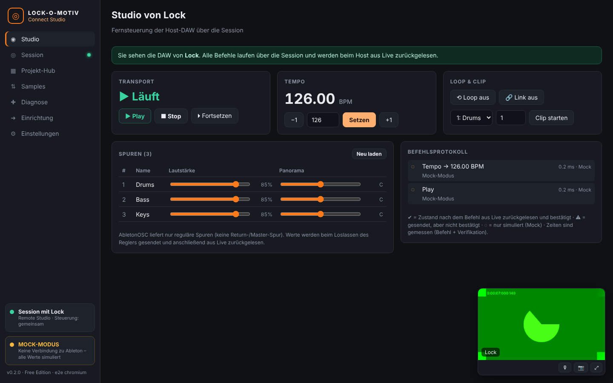
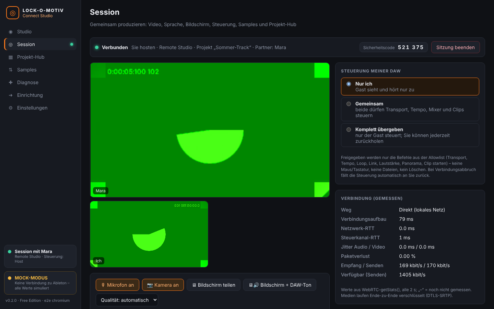
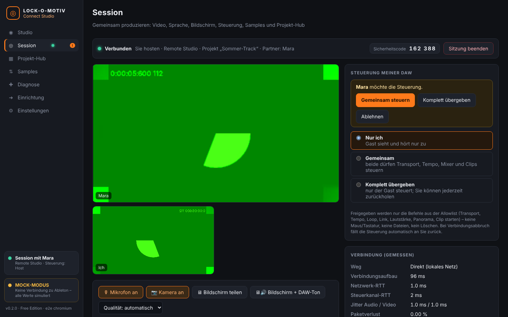
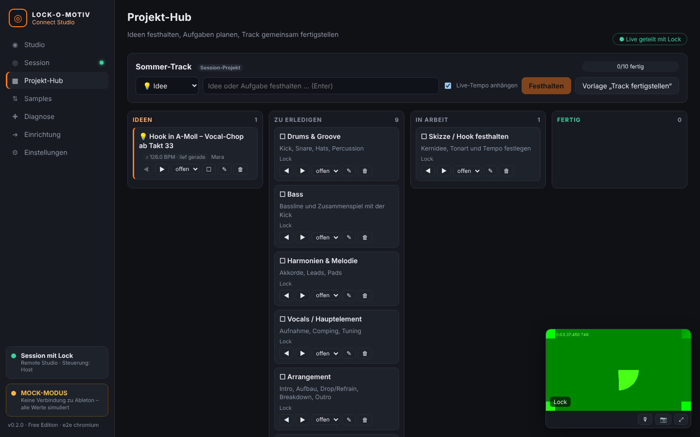
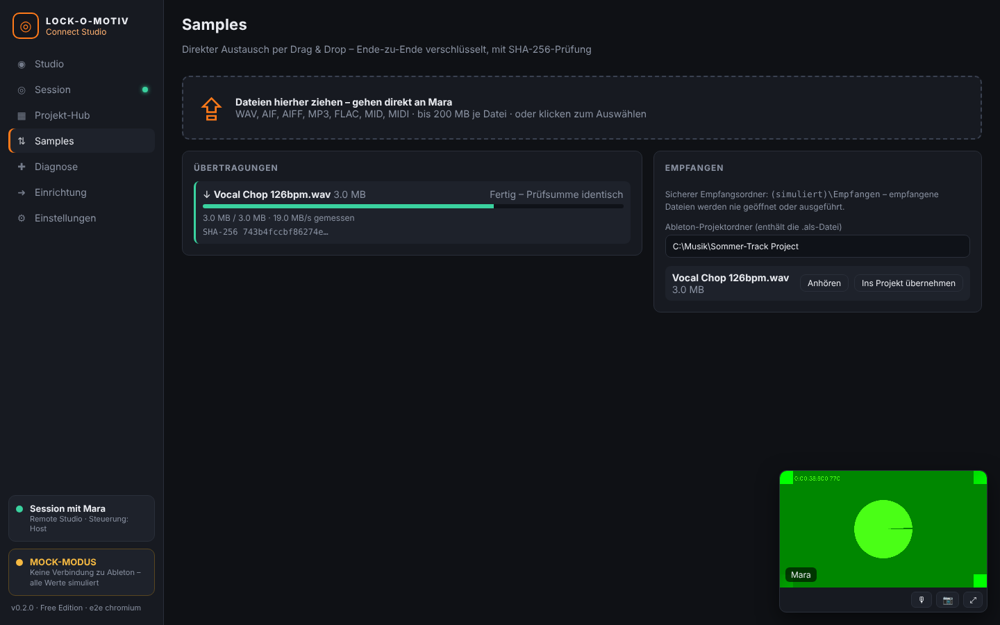
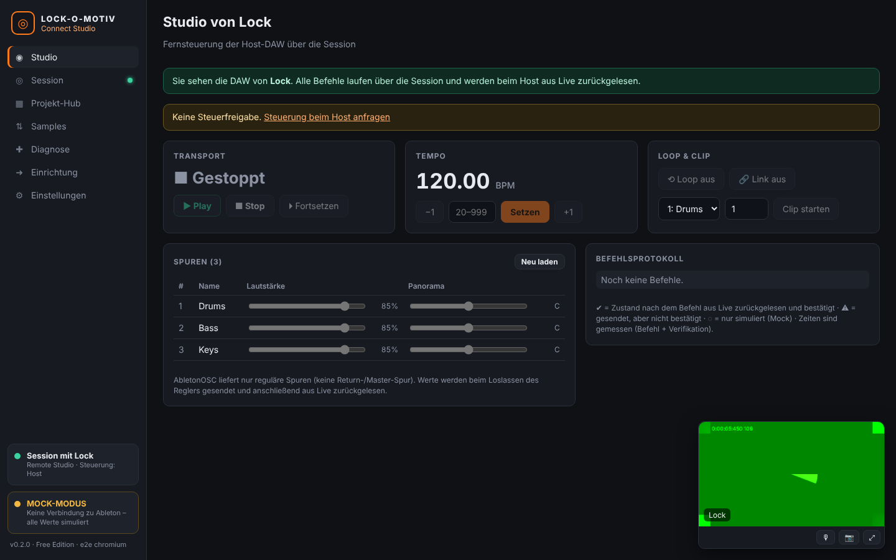
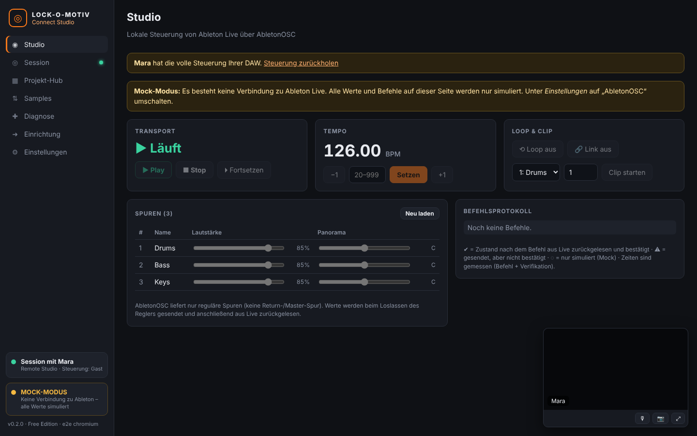

Die kostenlose Desktop-App für die Zusammenarbeit mit Ableton Live 12 – im selben Raum mit Ableton Link oder über das Internet mit Video, gemeinsamer Steuerung, Sample-Austausch und einem Projekt-Hub für Ideen und Planung.

Musik entsteht im Austausch: Einer spielt eine Idee an, der andere dreht am Tempo, ein Sample wandert über den Tisch, auf einem Zettel steht, was bis Freitag fertig sein muss. Connect Studio bringt genau diesen Ablauf in eine App – lokal wie online.
Beide im selben Netz, jeder mit eigenem Live. Tempo und Phase laufen über das in Live eingebaute Ableton Link sample-genau synchron – einschaltbar direkt aus Connect Studio.
Ein Live-Set beim Host. Der Partner sieht den Bildschirm, hört den DAW-Mix, spricht per Video – und steuert nach Freigabe mit, bis zur kompletten Übergabe.
Jeder arbeitet in seinem eigenen Ableton. Play, Stop, Tempo und Loop werden gekoppelt; Projekte bleiben getrennt und werden nie überschrieben.
Die Funktionen im Überblick – gruppiert nach den Bereichen der App.
Host startet eine Session und erhält einen Einladungscode; der Partner fügt ihn ein – fertig. Im LAN mit eingebautem Server, über das Internet mit eigenem Server. Automatische Wiederverbindung nach Netzabbruch.
Zwei Kamerabilder, Mikrofon an/aus, Geräteauswahl, Qualitätsstufen mit automatischer Bitratenanpassung. Ein kleines Videofenster bleibt auf jeder Seite sichtbar.
Das Ableton-Fenster teilen und den Live-Mix als eigene Tonspur senden – getrennt vom Mikrofon, damit nichts doppelt ankommt.
Host wählt: Nur ich, Gemeinsam oder Komplett übergeben. Gast kann anfragen, Host kann jederzeit sofort zurückholen. Bei Abbruch fällt die Steuerung automatisch an den Host.
Im Dual Studio starten, stoppen und Tempoänderungen in beiden Live-Instanzen gleichzeitig – nur wenn beide zustimmen.
Play, Stop, Fortsetzen, BPM, Loop, Ableton Link, Spurliste mit Lautstärke und Panorama, Clips starten. Jeder Befehl wird aus Live zurückgelesen und bestätigt (✔).
WAV, AIFF, MP3, FLAC und MIDI einfach ins Fenster ziehen. Empfänger nimmt an, Prüfsumme wird verglichen, abgebrochene Übertragungen setzen fort. Vorschau zum Anhören, Übernahme in den Ableton-Projektordner per Klick.
Ideen sofort festhalten – auf Wunsch mit dem aktuellen Live-Tempo. Planer-Board von Ideen bis Fertig, Zuständigkeiten, Fortschrittsanzeige und die Vorlage „Track fertigstellen“ mit zehn Schritten von der Skizze bis zum Export.
Der Hub funktioniert auch ohne Session. Bei der nächsten Verbindung werden die Ideen beider Seiten automatisch und konfliktfrei zusammengeführt.
Assistent beim ersten Start: Ableton und AbletonOSC finden, Verbindung testen, Kamera/Mikrofon mit Pegel prüfen, Netzwerk testen. Diagnoseseite mit gemessenen Laufzeiten. Mock-Modus zum Ausprobieren ohne Ableton.
Aufnahmen aus dem automatischen Zwei-Teilnehmer-Test (Testbild-Kameras, simulierte DAW).






Wer seine DAW für jemand anderen öffnet, muss sich darauf verlassen können, dass nur passiert, was er erlaubt.
| App | Tauri 2 · React · TypeScript · Rust |
| Ableton | AbletonOSC (MIT), Ableton Link |
| Verbindung | WebRTC, STUN/TURN (coturn) |
| Server | eigener Signalisierungsdienst, Docker + TLS |
| Speicher | SQLite, lokal |
| Installer | NSIS, Installation pro Benutzer |
| Lizenz | MIT · SBOM und Drittlizenzen dokumentiert |
Alle Ableton-Befehle werden automatisch gegen den Originalcode von AbletonOSC geprüft. Stand der Tests: Linux-Entwicklungsumgebung, November 2026.
Connect Studio wird in fünf Etappen entwickelt. Zwei sind umgesetzt; die nächsten Schritte sind der Praxistest unter Windows und der Ausbau des Audiowegs.
| Etappe | Inhalt | Status |
|---|---|---|
| 1 | Desktop-App, Ableton-Steuerung über AbletonOSC, Mock-Modus, Diagnose | umgesetzt & automatisch getestet |
| 2 | Online-Zusammenarbeit: Session, Video, Steuerung teilen/übergeben, Samples, Projekt-Hub, Ableton Link | umgesetzt & automatisch getestet |
| 3 | Eigener Audio-Dienst für den Ableton-Mix (ASIO/Loopback), Internet-Verbindungen im Praxistest, Latenzmessung | geplant |
| 4 | Desktop-Fernsteuerung (Maus/Tastatur) mit Zustimmung und sichtbarer Anzeige, Ausbau Dual Studio | geplant |
| 5 | Windows-Installer, Sicherheitstests, Beta-Release | geplant |